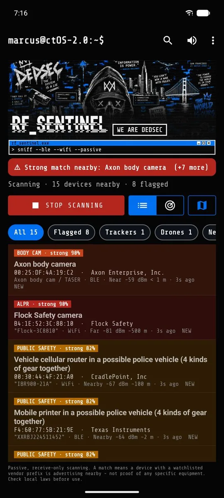
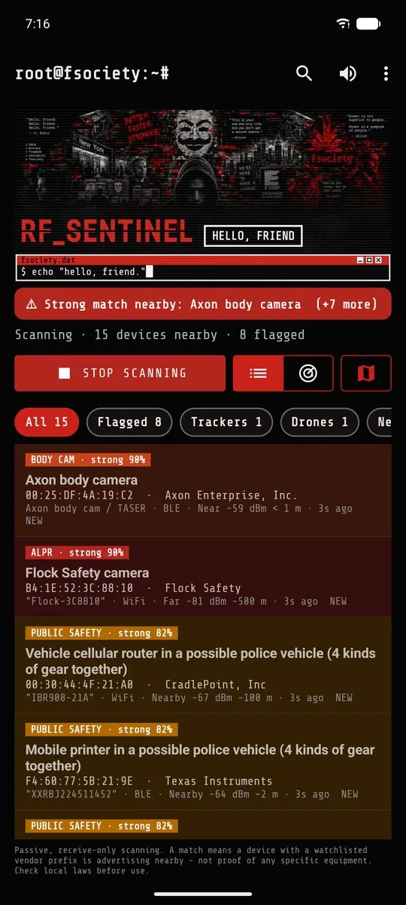

RF Sentinel, detector de vigilancia para Android
Una app gratuita y de código abierto para Android. Escucha las señales Bluetooth LE y WiFi a tu alrededor y avisa del equipo de vigilancia: rastreadores que te siguen, cámaras corporales de policía, drones, gafas con cámara e indicios de antenas de telefonía falsas.
SOLO RECEPCIÓNSin root · sin cuenta · sin analíticas · GPL-3.0 · Android 8.0+
APK firmado, publicado en GitHub. No está en Google Play. Por ahora la app está en inglés.


Qué detecta
| Categoría | Ejemplos | Cómo |
|---|---|---|
| Rastreadores que te siguen | AirTag, Google Find Hub, Samsung SmartTag, Tile, Chipolo | Avisa cuando un rastreador sigue contigo (por defecto, 10 min y 800 m) |
| Cámaras corporales | Axon, Motorola VB400, Zepcam, Getac | Identificadores Bluetooth y prefijos de fabricante |
| Drones | Cualquier dron que emita Remote ID (DJI, Autel, Parrot...) | Número de serie, posición, altitud y posición del piloto |
| Gafas con cámara | Ray-Ban y Oakley Meta, Snap Spectacles, Vuzix | Identificadores Bluetooth del fabricante |
| Antenas de telefonía falsas | IMSI catchers | Indicios visibles sin root: paso repentino de 4G a 2G, identificadores clonados o reservados |
| Skimmers de tarjetas | Módulos Bluetooth ocultos en surtidores y cajeros | Nombres y servicios Bluetooth típicos |
| Cámaras ocultas (opcional) | Cámaras espía WiFi en modo de configuración | Nombres de red por defecto |
| Herramientas de hacking (opcional) | Flipper Zero, WiFi Pineapple, ataques de desautenticación WiFi | Identificadores, nombres de red por defecto, ráfagas de paquetes |
En la configuración, marca Spain para añadir el equipo usado en España: cámaras Axon y radios Teltronic.
Cada detección muestra sus pruebas, su fuente y un nivel de confianza. Es una coincidencia de firma, no una prueba de quién está presente.
Instalar
- En tu teléfono, toca Descargar el APK arriba.
- Abre el archivo desde la notificación o desde tus descargas.
- Si Android lo bloquea, abre los ajustes que te propone, permite esta fuente, vuelve atrás y toca Instalar.
- Abre RF Sentinel y sigue la configuración: tema, región, alertas y permisos.
- Toca Start scanning y concede la ubicación y Dispositivos cercanos.
Guía completa, en inglés: Install · Q&A
Privacidad
- Solo recepción. La app no emite nada, no interfiere y no se conecta a los dispositivos que detecta.
- Sin cuenta, sin nube, sin analíticas. Las detecciones se guardan en una base de datos local, excluida de la copia en la nube.
- Internet se usa para el mapa, los datos de cámaras y las opciones que actives.
- Tus datos solo salen del teléfono si los exportas o compartes.
Aviso legal
RF Sentinel se ofrece con fines de información, investigación y privacidad personal. Que el escaneo pasivo de Bluetooth y WiFi sea legal depende de dónde estés, así que comprueba las leyes locales. Una detección indica que hay cerca un dispositivo con una firma determinada. No prueba quién está presente ni qué está haciendo. Esto no es asesoramiento legal.